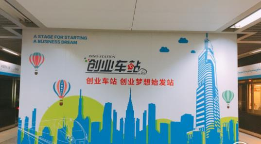
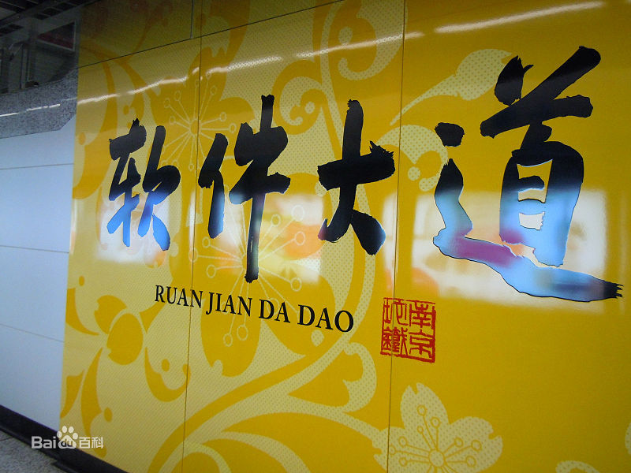

软件大道站・创业车站

整个车站共分为：营造创业氛围，激发人才创造活力的氛围营造区；在站厅层和站台层均有分布的产品体验区；实时更新，集展示与宣传于一体的信息发布区；提供谷内众创空间和创投机构的资源对接区以及举办小型的创业活动的创业活动区五大功能板块。 创业车站正式启动之后将及时发布创业资讯，定期搭建资源对接平台，软件谷内的企业可以通过预约，免费进行创业产品的展示，通过进一步挖掘资源，今后将免费对软件谷以外的企业或者个人开放。
地理位置
位于南京市雨花台区软件大道与花神大道路口，以其附近的软件大道而得名，为地下两层岛式车站，未来将与南京地铁16号线换乘。

出入信息
1号出入口：南京市雨花外国语小学 、景明佳园小学、三江学院、雨花台中学